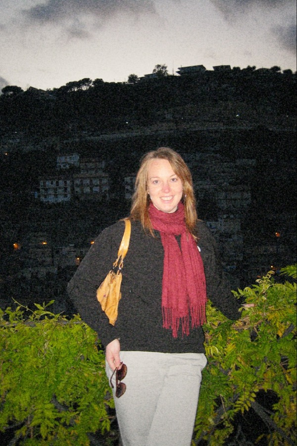
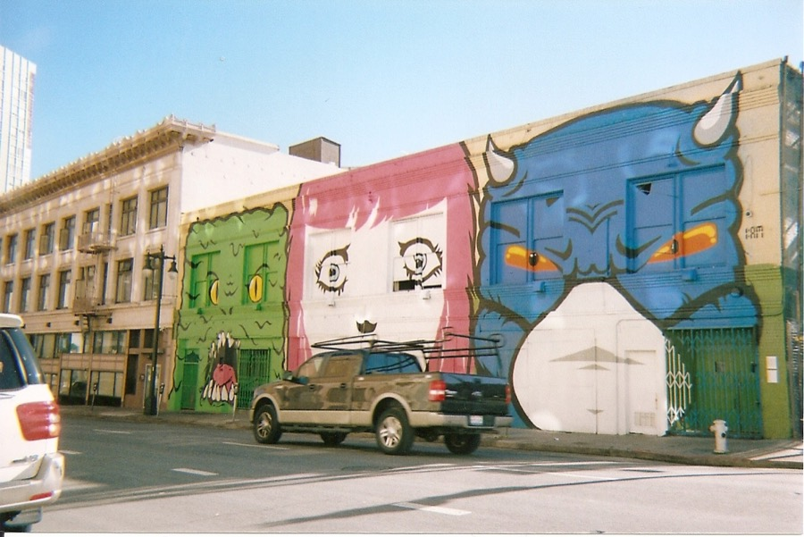
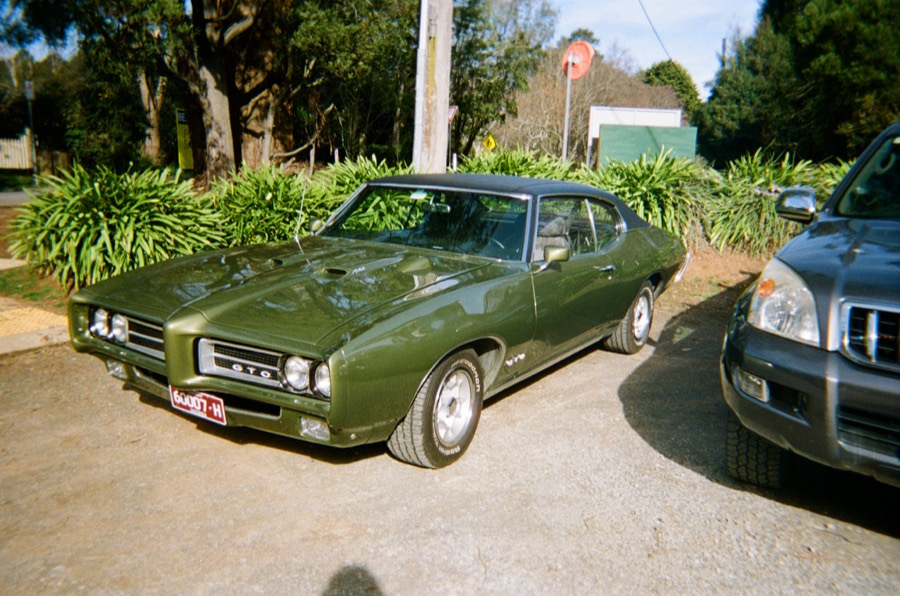
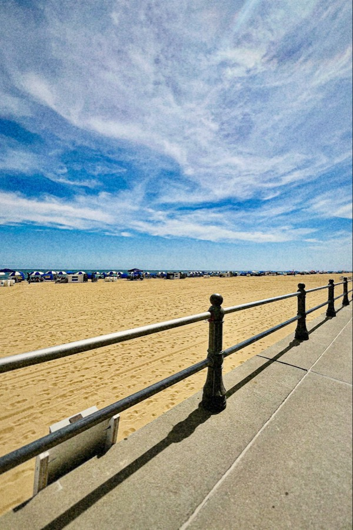
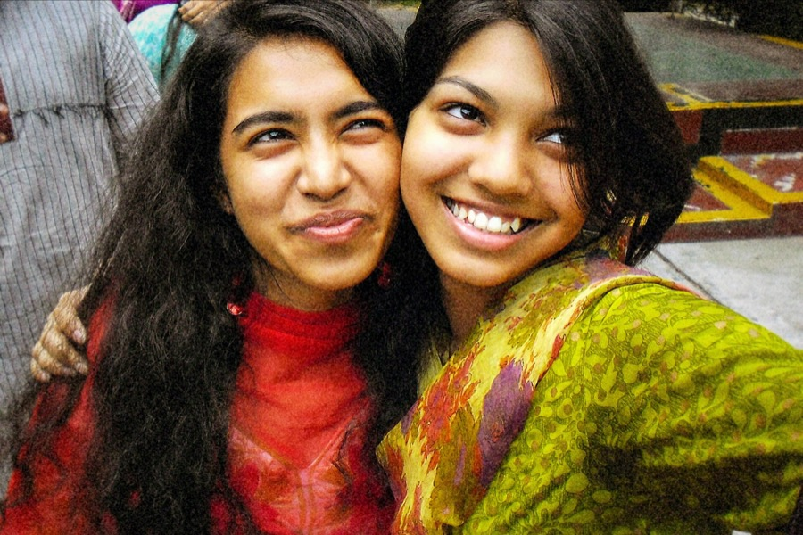
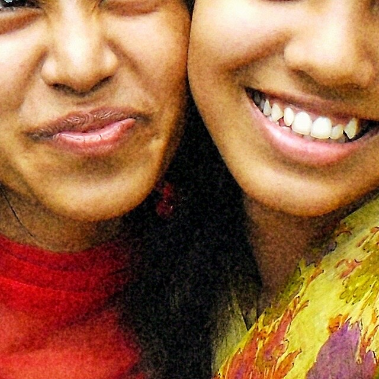
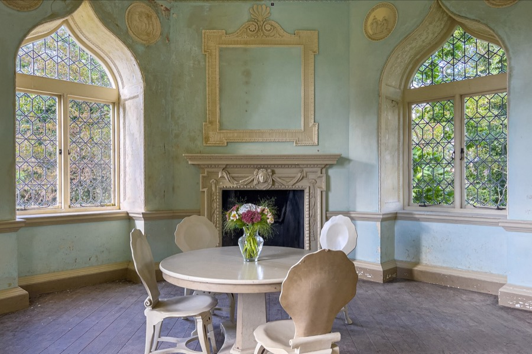
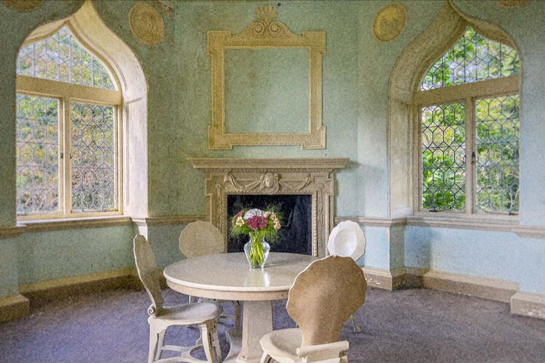
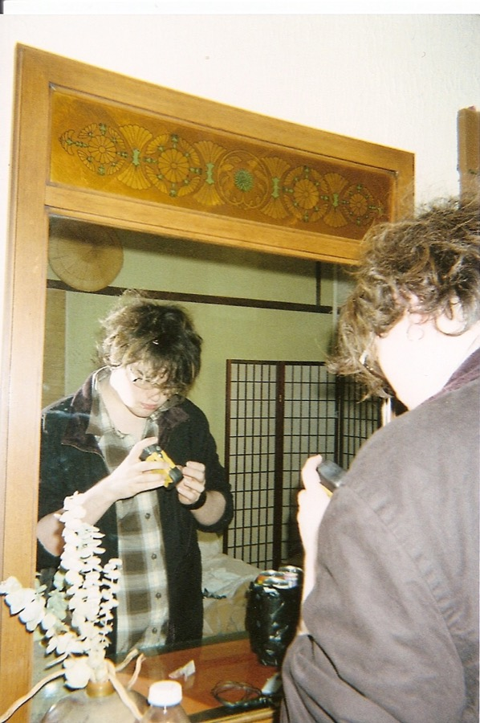
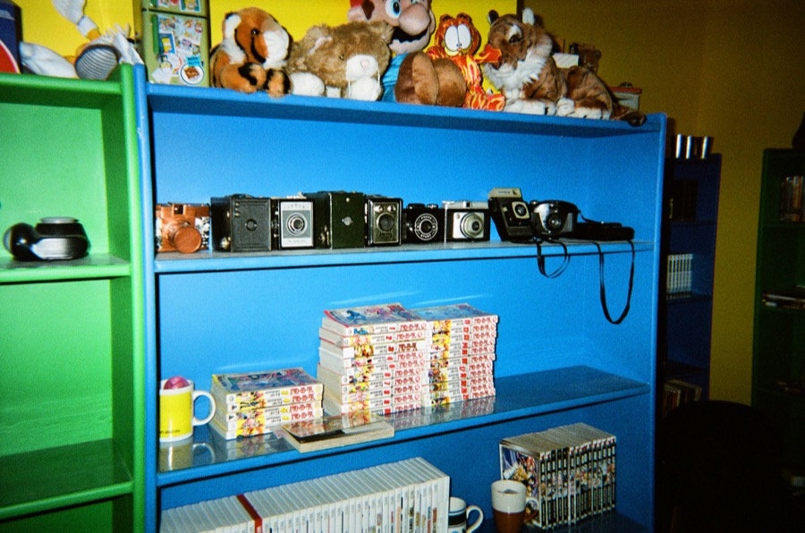

Scenes
Side by side with the Format Reference
A photograph made with the reference format beside a scene of the same kind developed by the app. The subjects differ; judge color, contrast, grain and the format's imperfections.
danisabella · CC BY 2.0 · source
danisabella · CC BY 2.0 · source


danisabella · CC BY 2.0 · source

Matthew Paul Argall · CC BY 2.0 · source

Every scene
DaySunny beach boardwalk (iPhone 13)

DayPeople playing capoeira in a city park (iPhone 13)

DayPasture gate in Scotland (iPhone 13)
Skin tonesNatural-light portrait: older woman, light skin
Skin tonesNatural-light portrait: two women, medium-brown skin



Skin tonesNatural-light portrait: two boys, dark skin (beach daylight)
FlashGroup toast lit by on-camera flash (compact camera, 2008)

FlashNight portrait with direct flash outdoors (compact camera, 2006)

Night or dim, no flashDim night street with street lamps, no flash (Google Pixel 7)

Bright highlightsBacklit interior with bright windows (iPhone 13 Pro)


Bright highlightsSun in frame over the sea with glints (iPhone 14 Pro)


_May_2023_(1).JPG){kind=link}


.jpg){kind=link}
.jpeg){kind=link}
.jpg){kind=link}
.jpg){kind=link}
.jpg){kind=link}

.jpg){kind=link}
.jpg){kind=link}
All Format Reference imagery
Photographs and film frames made with the Format Reference or the closest openly licensed equivalent, as credited. Judge the character, not the subject.
Single-use camera prints
danisabella · CC BY 2.0 · source
Young woman photographed close-up on a sunny San Francisco street with the FunSaver's built-in flash firing (photographer's caption: 'My poor flash-blinded roommate'). Shows direct on-camera flash as fill in daylight, hard frontal light on skin, warm 800-speed colour negative and slight edge softness of the plastic lens. Looks freshly processed: a lab print scan, no fading or colour shift. Camera identified by the photographer's tags (kodakfunsaver, disposablecamera). The film is not stated; FunSaver cameras sold in the US in 2009 were loaded with Kodak 800-speed colour negative film (Max/Ultramax 800 family), so treat the stock as likely, not confirmed. Largest public Flickr size is the original scan (about 800 x 1200). Flickr title: "My poor flash-blinded roommate.". License confirmed through Flickr oEmbed at download time. Downloaded the Flickr original.
danisabella · CC BY 2.0 · source
Indoor night-time portrait of a woman in a room, lit by the FunSaver's direct flash: bright, flat light on the face and scarf, quick falloff to the background and the warm, saturated rendering of 800-speed consumer negative film. Representative of single-use camera indoor snapshots. Freshly processed lab scan, no fading. Same roll and photographer as disposable-01 (Flickr tags camera, disposable, funsaver, kodak). Film assumed to be the FunSaver's 800-speed Kodak colour negative; not stated by the photographer. Flickr title: "Photo's a bit faily, but whatever.". License confirmed through Flickr oEmbed at download time. Downloaded the Flickr original.

danisabella · CC BY 2.0 · source
Indoor flash snapshot of two people at a mirror in a doorway at night: strong flash on the near subjects, hard shadows, grainy darker surround and warm skin typical of 800-speed consumer negative film. Fresh lab scan. Same roll as disposable-02 (taken 2009-11-25). Film assumed, not stated. Flickr title: "Das and the mirror.". License confirmed through Flickr oEmbed at download time. Downloaded the Flickr original.
danisabella · CC BY 2.0 · source
Daylight street scene with a colourful mural and a passer-by: shows the FunSaver look without flash, bright saturated colours, high contrast, lens softness and vignetting toward the corners. Fresh lab scan. Same roll as disposable-02/03. Film assumed, not stated. Flickr title: "graffiti on the way to temple". License confirmed through Flickr oEmbed at download time. Downloaded the Flickr original.

Matthew Paul Argall · CC BY 2.0 · source
Bedroom shelves with cameras, manga and plush toys lit by the single-use camera's direct flash: saturated primaries (blue and green shelves, yellow wall), hard shadows and flash falloff. Modern processing and scan (2019), no fading. Generic Kodak single-use camera, not a FunSaver: the photographer names it 'Kodak Flash Single Use Camera' and tags it kodak800 / 800isofilm (the non-US Kodak single-use model with 800-speed film). Included as a close stand-in because indoor FunSaver flash examples under open licences are scarce. Flickr title: "Cameras, manga, and Garfield". Flickr description: "Just a casual photo taken in my bedroom. Camera used: Kodak Flash Single Use Camera. ". License confirmed through Flickr oEmbed at download time. Downloaded a Flickr rendition (largest edge up to 2048 px); the original is larger.
Matthew Paul Argall · CC BY 2.0 · source
Green 1969 Pontiac GTO parked in shade on a sunny day: shows the single-use daylight look with bright greens, deep saturation, mild vignetting and plastic-lens softness. Modern processing and scan (2019), no fading. Photographer's caption: 'Kodak Flash Single Use Camera (preloaded with Kodak 800 film)'. Generic Kodak single-use, not a FunSaver. Flickr title: "1969 Pontiac GTO". Flickr description: "Camera used: Kodak Flash Single Use Camera (preloaded with Kodak 800 film) Location: Olinda, Victoria, Australia. Sometimes on the weekend, there are classic cars parked outside the three pubs in my neighbourhood. Not every weekend though. In this case, I was lucky, as this and a couple other clas". License confirmed through Flickr oEmbed at download time. Downloaded a Flickr rendition (largest edge up to 2048 px); the original is larger.
Values in the app
From FilmLook.swift: the one place each Camera's and Film Stock's look is set. Spatial values are fractions of the picture's long edge.
/// 1990s Disposable. Format Reference: the Kodak Fun Saver single-use camera with flash and 800-speed color
/// negative film, printed by a minilab. Warm, saturated color with heavy grain that grows in an underexposed dim
/// scene, a plastic lens's soft, darker corners, and harsh direct flash that lights the subject flat and lets the
/// background fall away. No light leaks, red-eye, dust or scratches (PRD 2.1 section 6.1).
static let disposable = Treatment(
emulsion: .color(ColorEmulsion(
warmth: 0.055, layers: Layers(greenFromBlue: -0.05), saturation: 1.1,
tone: ToneCurve(contrast: 1.1, midtones: 0.88, black: 0.015, white: 0.99),
shadows: RGB(-0.004, 0.008, 0.004), highlights: RGB(0.004, 0.003, -0.006),
grain: Grain(amplitude: 8, size: 0.0009, chroma: 0.3, shadows: 0.6)
)),
lens: Lens(edgeSoftness: 0.0012, edgeDarkening: 0.6),
flash: Flash(falloff: 0.9, contrast: 0.1)
)